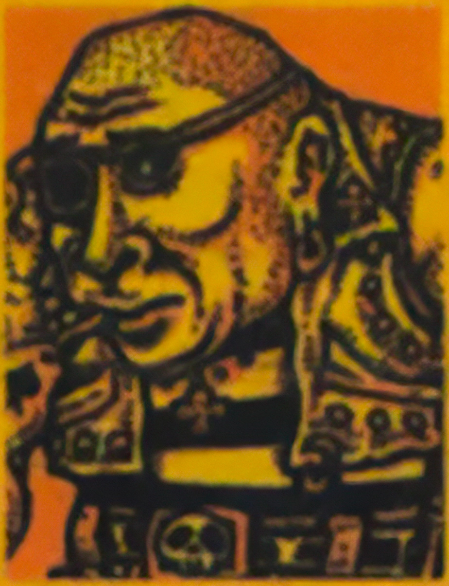
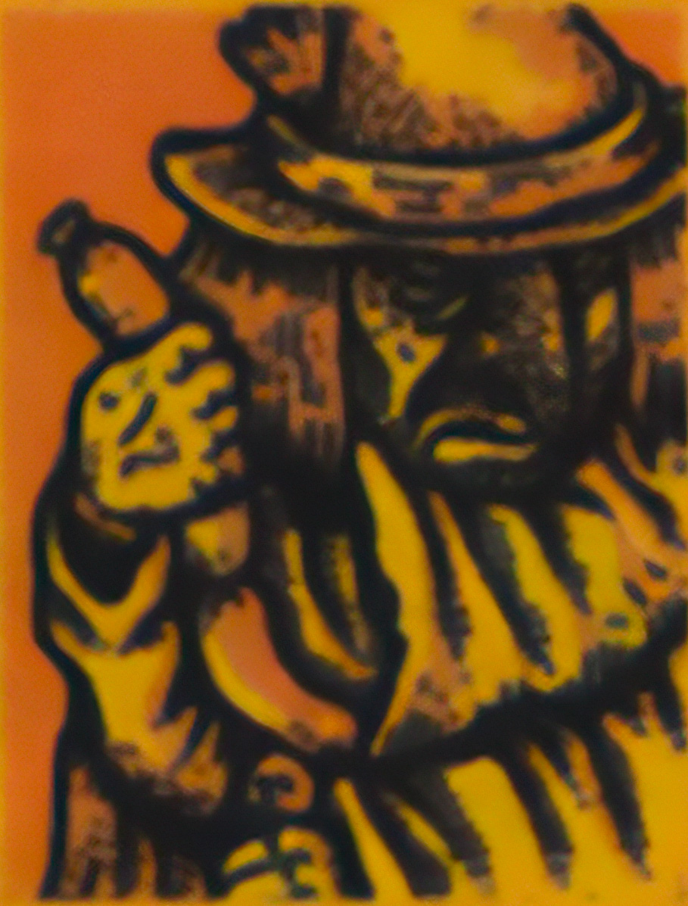
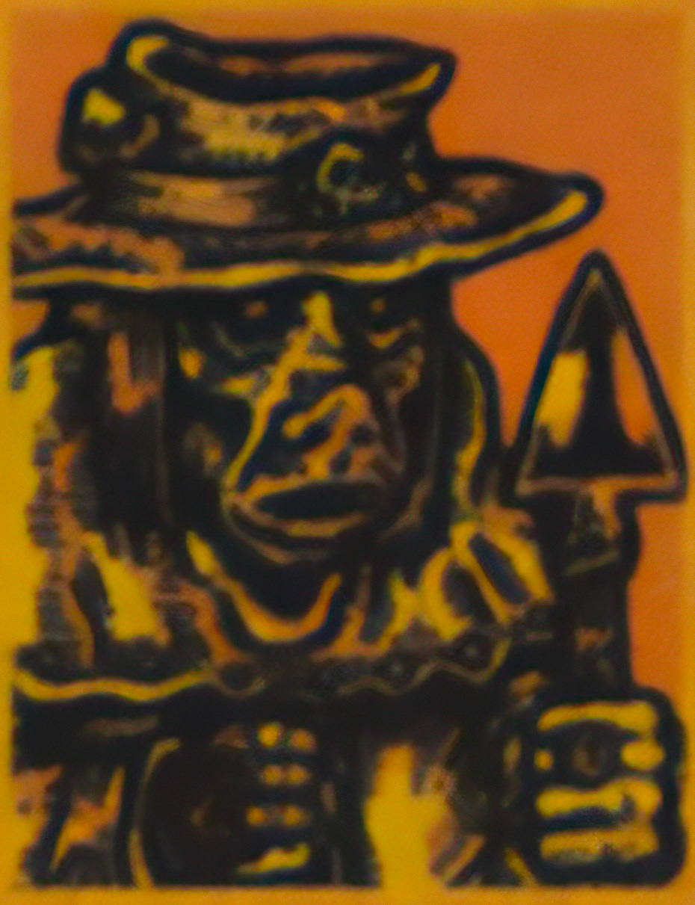

QUEST FOR SAUSAGE
Pigskin Port. Once a busy hub for the livestock trade of Brüttelberg's foothills, now sunken into decay. The filthy streets are crowded with refugees, vagrants & stench. The countryside surrounding the rivers has grown perilous as murderous & obscene hallucinations stalk the hills by night. The bandit gangs have a strong presence in Pigskin Port, & those lucky enough to escape the Donjons of Brüttelberg often find work of a less than legitimate nature here.
Having recently escaped yourselves, you hope to find a way to make some quick funds. You step into a local tavern to find a meal & perhaps even a job, but to your dismay you soon find that the tavern is out of food! It seems there's a shortage throughout the region - herds & crops blighted by witches, caravans raided, the bandits driving up the cost of trade... the townsfolk blame all these things & more.
Wally Whisker the tavern keeper will pay anyone who can find & bring back a cache of provisions, but some of the shadier elements in town have come up with an alternate plan to feed the starving locals...
SETUP
OBJECTIVE
Complete the objectives listed for one of your three contacts, then return to Pigskin Port & Rest to complete the mission.
| Wally Whisker, owner of the tavern, will gladly pay for a cache of provisions... Trade with a Caravan or Goblin Merchant & spend 12 GPĎ amongst the party to purchase supplies. Search a Slaughtered Caravan or Store Room & at least one adventurer must pass the required PER Test. |  |
| Lemmy Slick from the River Rat Gang has a plan to make sausages from the corpses of monsters... As a party, destroy 5 total monsters consisting of any combination of the following monster types: Brute, Fishoid, Goblin, Orc, or Reptilian. |  |
| Lazar the necromancer's assistant will make sausages out of anything! As a party, destroy 5 total monsters consisting of any combination of the following monster types: Brute, Fishoid, Goblin, Orc, or Reptilian Encounter a Death Pit, Feeding Pit, River of Gore, or Slaughtered Caravan. |  |
REWARD
You worked for Wally Whisker
Each adventurer gains 8 GPĎ. Increase the Town Level at Pigskin Port.
You worked for Lemmy Slick
Each adventurer gains 4 GPĎ. Increase the Town Level at the Bandit Camp & Pigskin Port.
You worked for Lazar the Necromancer's assistant
The adventurer(s) with the lowest MRL may (each) draw an Epic Loot card & other adventurers may each draw a Loot card. Increase the Danger Level at Pigskin Port.
MISSION PATH
It's time for you to İEstablish a Base, but you've also heard than a noble family had their İCity Baby Attacked by Rats and may need your help.